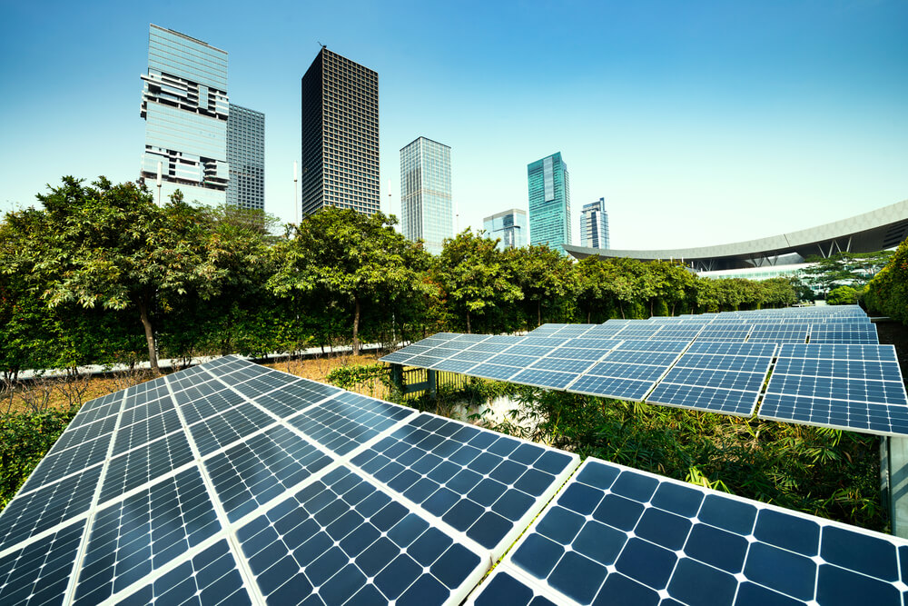
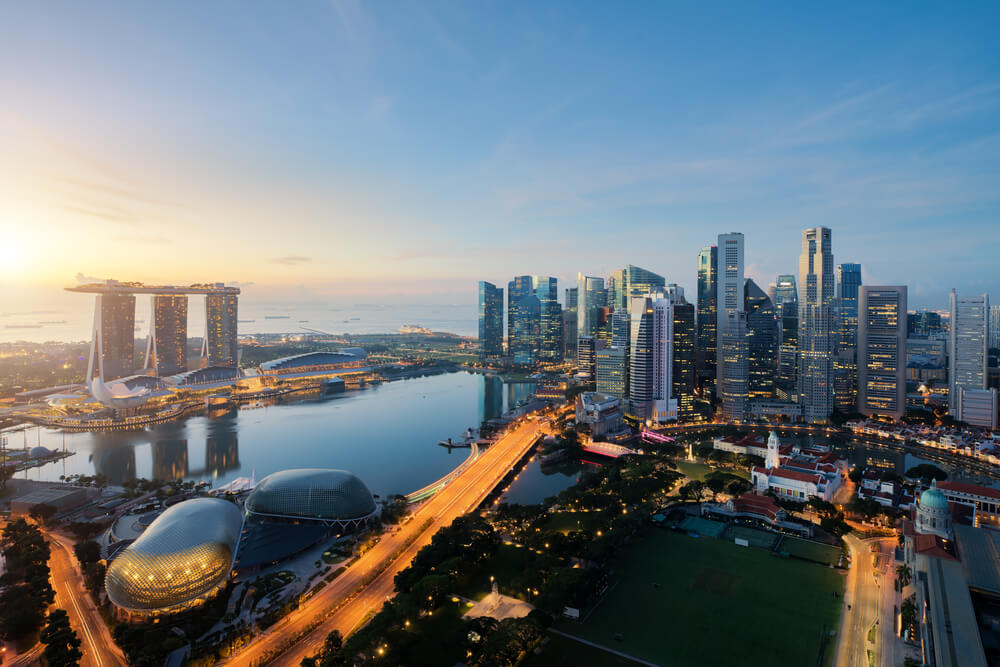

Uma pesquisa realizada pela consultoria McKinsey estima que, até 2025, as cidades inteligentes gerem 60% do Produto Interno Bruto (PIB) mundial. O termo costuma ser utilizado para se referir a cidades que usam a tecnologia em favor dos moradores. Mas, o que é, de fato, uma cidade inteligente? O que esse conceito significa no Brasil? E quais são os principais exemplos de cidades inteligentes no mundo? O Habitability responde para você!
De fato, cidades inteligentes são aquelas que utilizam tecnologia para melhorar a eficiência político-econômica e para
amparar o seu desenvolvimento. Mas esse conceito é tão amplo, que abarca desde uma cidade que implanta sensores de
Internet das Coisas (IoT) conectados nas ruas para monitoramento do trânsito em tempo real, como também cidades que
passam a privilegiar espaços verdes e meios de transporte públicos e alternativos à gasolina.
Dessa forma, acaba fazendo mais sentido entender uma cidade inteligente como um espaço onde vivem governos e sociedades
mais inteligentes, na qual a tecnologia é apenas um instrumento. Portanto, uma cidade inteligente é mais que um espaço
urbano que utiliza tecnologia de ponta, mas um lugar que é pensado para as pessoas, com foco na inclusão social, na
diminuição da desigualdade e pautada pela sustentabilidade. Uma cidade segura, resiliente e autorregenerativa, capaz de
responder rapidamente a mudanças climáticas, evitando impactos sociais graves.
Como afirmou a coordenadora geral do Ministério do Desenvolvimento Regional, Ana Paula Bruno, em entrevista ao WRI Brasil,
“tem muita gente falando de cidades inteligentes sem entender do tema de cidades e isso começa a capturar a discussão
sobre desenvolvimento urbano de um jeito torto: permanecem nossas velhas questões, de desigualdade, provisão de
infraestruturas básicas e outras questões da nossa formação urbana. Não se pode deixar essa pauta de lado. Temos de
construir uma visão que integre a dimensão da tecnologia às demais, e não as substitua pela tecnológica”.
Em 2020 o governo brasileiro assinou a Carta Brasileira de Cidades Inteligentes. O texto foi construído em parceria entre
o Brasil e a Alemanha para apoio à Agenda Nacional de Desenvolvimento Urbano Sustentável no Brasil (ANDUS). Os iniciadores
e coordenadores do processo foram o Ministério do Desenvolvimento Regional (MDR), o Ministério de Ciência, Tecnologia e
Inovações (MCTI), o Ministério das Comunicações (MC) e a agência alemã GIZ. De acordo com o documento, as cidades
inteligentes são aquelas comprometidas com o desenvolvimento urbano e a transformação digital sustentáveis, em seus
aspectos econômico, ambiental e sociocultural.
A Carta colocou no horizonte uma série de metas para as cidades atingirem a qualidade de “inteligentes”. A transformação
digital é uma delas, bem como, o acesso à internet de qualidade para a população e a melhora da educação e comunicação
pública. Ou seja, uma cidade inteligente brasileira não se limita ao desenvolvimento econômico local e sustentável, mas
também trabalha em favor da inovação na gestão pública.
Na definição do Ministério do Desenvolvimento Regional, cidades inteligentes são aquelas “que atuam de forma planejada,
inovadora, inclusiva e em rede, promovem o letramento digital, a governança e a gestão colaborativas e utilizam tecnologias
para solucionar problemas concretos, criar oportunidades, oferecer serviços com eficiência, reduzir desigualdades, aumentar
a resiliência e melhorar a qualidade de vida de todas as pessoas”. Além disso, elas devem garantir o uso seguro e responsável
dos dados e das tecnologias de comunicação.
O planejamento urbano é a chave que destranca as cidades inteligentes. Esses dois conceitos devem ser aplicados de maneira conjunta, pois o desenvolvimento e a aplicação de técnicas modernas de gestão estão diretamente relacionados ao nível de organização urbana da cidade. Nesse ponto, a tecnologia é a pedra fundamental do planejamento urbano. Um exemplo é o caso da cidade do Rio de Janeiro, que está usando digital twins para remodelar o centro da cidade e também para entender como se comportam as favelas cariocas.
A mobilidade urbana conectada é também uma característica das cidades inteligentes. Políticas bem planejadas para facilitar
e diminuir o tempo de deslocamento trazem ganho de eficiência para a cidade, como também diminuem a poluição.
Incentivar a mobilidade ativa, por meio do uso de bicicletas ou até mesmo caminhar, tem, ainda, impacto na saúde dos
cidadãos. Para isso, existem tecnologias de análise em tempo real do trânsito, entendimento do uso e das melhores
rotas de ônibus, uso de dados para compreender qual o fluxo de pessoas em áreas de metrô/trem, entre outras.
Outra solução das cidades inteligentes para a questão da mobilidade urbana é apenas… criar áreas que podem ser usadas
a pé: áreas mais iluminadas, com lâmpadas que utilizam energia eólica, e seguras o bastante para incentivar o caminhar.
Em uma terceira vertente está a evolução dos transportes, que tendem a ficar cada vez mais autônomos.
Uma cidade inteligente já precisa ter isso em mente.
A infraestrutura para o uso da tecnologia conectada é o “marco-zero” das cidades inteligentes. De acordo com a McKinsey,
existem três camadas de “inteligência” das cidades: a base de tecnologia, incluindo as redes para conectar os devices
e os sensores; as aplicações inteligentes com análise de dados; e a adoção e o uso de tudo isso voltado a mudanças de
comportamento na cidade. O uso do 5G é o que vai acelerar todas essas camadas.
Enquanto o 4G foi chamado de “a internet dos aplicativos”, pela sua capacidade de tornar a conectividade de celulares
mais rápida, o 5G é chamado de “a rede do IoT”. Com a sua velocidade alta e baixa latência, ele consegue melhorar a
conexão dos devices menores, como sensores ou até mesmo câmeras de segurança das ruas. “O poder disruptivo da nova rede
vai permitir um salto tecnológico industrial com mudanças expressivas nos modos de produção e na modelagem de negócios”,
disse o presidente da Agência Brasileira de Desenvolvimento Industrial (ABDI), Igor Calvet.
As cidades inteligentes precisam colocar a resiliência em primeiro lugar. Isso significa, em um primeiro momento, usar a tecnologia para combater a mudança climática – e para diminuir a emissão de Gases de Efeito Estufa (GEE).
A cidade de Copenhague, por exemplo, será a primeira a se tornar “Net-zero” em carbono – falta apenas 20% para ela
alcançar a meta. Isso só foi possível por causa de uma abordagem “smart”: o uso de inovações e da visão completa
da cidade. A capital dinamarquesa tem 6,6 vezes mais bicicletas do que carros devido ao planejamento urbano
voltado para as bikes, as balsas que cruzam os canais da cidade usam energia solar e toda a matriz energética
da cidade está sendo alterada.
Segundo a Organização das Nações Unidas (ONU), as cidades resilientes são aquelas capazes de “resistir, absorver,
adaptar-se e recuperar-se dos efeitos de um perigo de maneira tempestiva e eficiente, através, por exemplo, da
preservação e restauração de suas estruturas básicas e funções essenciais”. Ou seja, depois de pensar em seu impacto,
uma cidade inteligente precisa construir resiliência contra a ação climática. Isso significa apostar em sistemas
digitais de prevenção e de ação rápida no caso de ações drásticas do clima. Por exemplo, ter capacidade de prever
quantidades de chuva e agir para isso; mapear as áreas de risco da cidade; ou ter uma rede para conversar com os
cidadãos e ativá-los imediatamente.
A qualidade de vida dos cidadãos é proporcional ao uso de tecnologia “inteligente”. De acordo com a pesquisa da McKinsey publicada em 2018, as soluções digitais podem melhorar entre 10% e 30% os índices totais de qualidade de vida das pessoas. A aplicação de ferramentas de análise do trânsito em tempo real, combinadas com câmeras conectadas e mapeamento inteligente, pode reduzir fatalidades no trânsito e de violência entre 8% e 10%, além disso, a resposta à emergência pode ser até 25% mais rápida e queda na criminalidade pode chegar a 30%, se forem combinados iluminação pública, mapeamento de crimes em tempo real e análises estatísticas de padrões de comportamento do crime.
De maneira prática, unir os tempos das iniciativas públicas e privadas é um dos grandes desafios das cidades inteligentes. Uma vez que as mudanças tecnológicas acontecem de maneira rápida, as cidades inteligentes também são aquelas que conseguem entender e regular o uso de tais serviços digitais com rapidez. Como é o caso de aplicativos de compartilhamento de caronas, ou, no futuro, o uso de drones para entregas. O setor público precisa estar antenado para as mudanças de comportamento dos moradores, que, muitas vezes, podem ditar novos formatos de se construir a cidade.
Assim como a definição, as cidades inteligentes têm caras diferentes no mundo todo. De acordo com o IESE Cities in
Motion (ICIM), Nova Iorque, Tóquio e Londres encabeçam a lista de cidades mais inteligentes do mundo. O destaque
da pesquisa da IESE está no uso tradicional de tecnologia, no qual Tóquio se destaca. Mas no quesito sustentabilidade,
a capital japonesa não é tão inteligente assim, perdendo para grandes cidades, como Londres e Barcelona.
Já o ranking feito pela IMD-SUTD é considerado mais refinado, já que as universidades suíça e de Cingapura fazem uma
análise de como a tecnologia melhora o dia a dia dos cidadãos, levando em conta também dados sociais e pesquisas de
percepção das pessoas. De acordo com este ranking, Cingapura está em primeiro lugar, seguida por Zurique e Oslo.
Na cidade de Cingapura, 67% dos habitantes indicam que há moradia acessível; 51,1% acham bons empregos na cidade; 36,2% se dizem satisfeitos com os serviços de saúde e 28,7% elogiam o transporte público. Em termos práticos, o transporte público tem nota de 77,6 de 100 pontos na análise do IMD-SUTD.
Mas e a tecnologia? Cingapura tem wi-fi gratuito em todos os serviços públicos. É possível usar aplicativos
para agendar a coleta de lixo (ou a doação de móveis), monitorar a poluição do ar via aplicativo e até propor
ideias para o governo.
De acordo com o presidente da Agência de Tecnologia do Governo de Cingapura com, Ng Chee Khern, a abordagem
no desenvolvimento da cidade sempre teve o cidadão como foco, o que garantiu que as mudanças tecnológicas
realmente fizessem a diferença. O investimento governamental também é essencial para tornar Cingapura ainda
mais inteligente: são quase US$ 1 bilhão de dólares por ano aportados em projetos que tornem a cidade inteligente,
como segurança pública, proteção de dados e monitoramento de tráfego em tempo real.
Em 2020, a cidade inaugurou um “digital twin” capaz de interpretar os impactos de todas as mudanças em um
ambiente digital, desde possíveis novas ruas até janelas e telhados diferentes nos prédios. A ideia é tornar
as construções também mais inteligentes, pensando na densidade populacional do espaço urbano.
No Brasil, os exemplos são variados. A cidade de São José dos Campos, no interior de São Paulo, por exemplo,
foi recentemente certificada pela Associação Brasileira de Normas Técnicas (ABNT) como cidade inteligente.
Já de acordo com o ranking Connected Smart Cities 2021, da Urban Systems, as cidades de São Paulo,
Florianópolis e Curitiba lideram a lista de cidades mais inteligentes do País. Nesse ranking são analisados
indicadores de mobilidade, economia, educação, saúde, meio ambiente, urbanismo, energia, tecnologia e inovação,
empreendedorismo e governança. Na área de Urbanismo, por exemplo, Curitiba foi o destaque. Já na de mobilidade
e acessibilidade, São Paulo ficou em primeiro lugar. No segmento de tecnologia e inovação, o Rio de Janeiro
ficou na primeira posição.